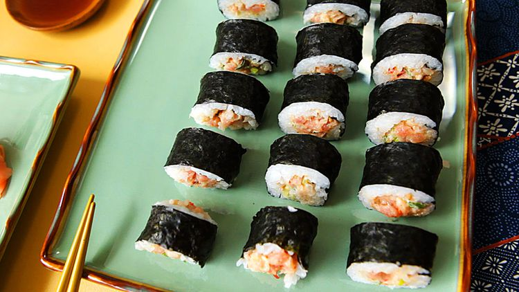

Spicy Tuna Rolls

Description
Spicy tuna rolls are a popular type of maki sushi featuring sushi‑grade tuna tossed in a spicy mayo sauce and rolled in nori (seaweed) with perfectly seasoned sushi rice. The tuna is typically mixed with Japanese mayonnaise, Sriracha, and a hint of sesame oil or soy sauce for depth, creating a creamy, piquant filling. The nori sheet is laid flat, sushi rice spread evenly, and the tuna mixture arranged in a neat line before being rolled tight with a bamboo mat.
Once sliced into bite‑sized pieces, the rolls reveal a core of vibrant red tuna encased by pearly white rice and glossy dark green seaweed. Spicy tuna rolls offer a satisfying contrast of textures—from the tender fish to the slight chew of the nori—paired beautifully with pickled ginger, wasabi, and a splash of soy sauce. They’re ideal as an appetizer at a sushi dinner or a light lunch when you want something fresh, flavorful, and a little fiery.
Ingredients
- ½ pound sashimi-grade tuna, finely chopped
- 4 tablespoons mayonnaise
- 2 green onions, chopped
- 1 tablespoon hot chile sauce
- 2 ½ cups prepared sushi rice
- 1 tablespoon sesame seeds
Steps
- Cut off the bottom quarter of each nori sheet; reserve for another use.
- Combine chopped tuna, mayonnaise, green onions, and hot sauce in a bowl.
- Center 1 sheet of nori on a bamboo sushi mat. Wet your hands. Spread a thin layer of rice on the nori using your hands; press into a thin layer, leaving a 1/2-inch space at the bottom edge. Sprinkle with sesame seeds. Arrange 1/4 of the tuna mixture in a line across the rice, about 1/3 of the way down from the top of the sheet.
- Wet the uncovered edge of the nori. Lift the top end of the mat and firmly roll it over the ingredients. Roll it forward to make a complete roll. Repeat with remaining ingredients.
- Slice the rolls into 3/4-inch pieces using a wet knife. Serve immediately or refrigerate until serving.
Home